Wall-ECE consists of five integrated subsystems. Below is detailed information on each system's development, including images showing the progression, design decisions, component selections, and all resources used in the design.
The first section we will cover is the overall system at the finish of integration of all of the subsystems and some detials be hind how the code architecture and how the hardware is connected together to make Wall-ECE come to life.
This the section will be missing things and will be added at a later date and time.
Full System
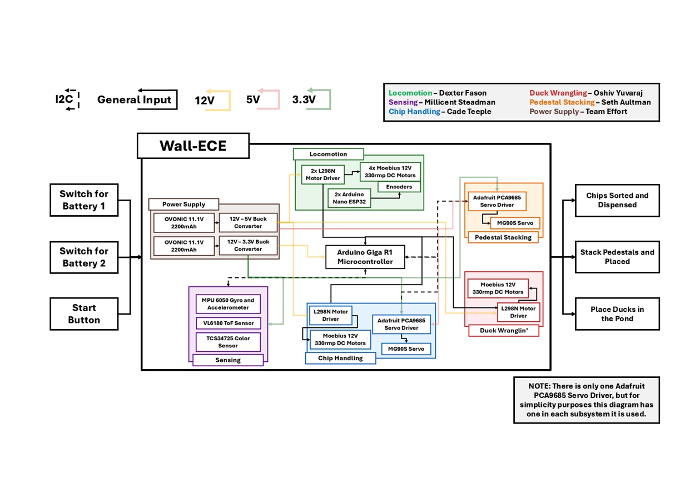
This is the system diagrams and shows what components that where used for each subsystem. We have six label subsystems on this diagram origally started with 5 but added power as one due to complexity.
You can see this diagram better in the deliverables
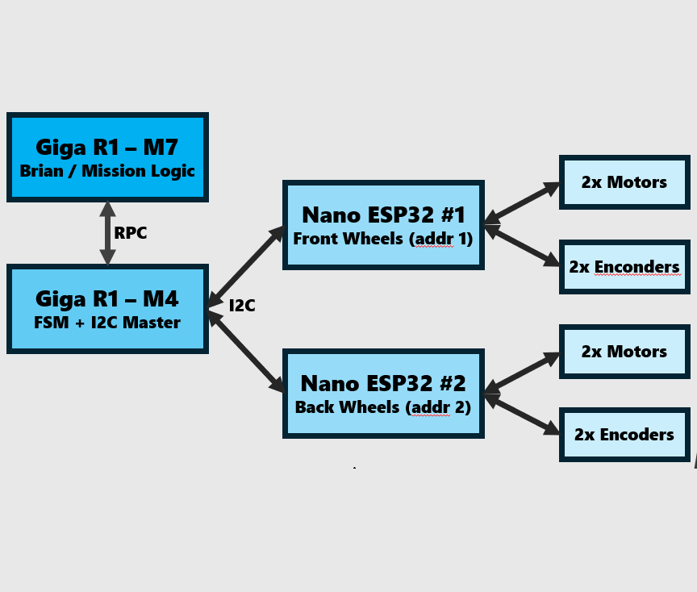
This is how the code is set up through out the system to ensure the highest efficiency possible. Using both processor on the Giga R1 to spit locomotion and sorting to make sure they can operate together with out trampling themselves. The two nanos handle the actual driving of the locomotion motors. The use of threading on the main core on the Giga R1 and two Nanos also help with efficiency
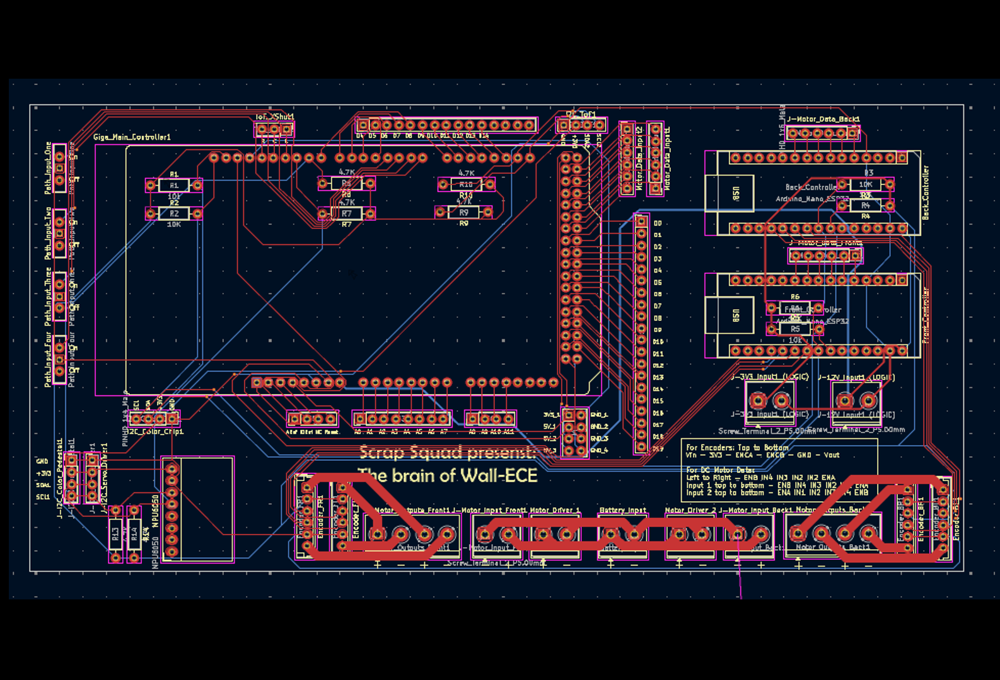
This the PCB that was designed specialy for this project. It helped greatly with cable management and how they where sent around the robot to make sure that they are functioning at the highest level.
This is the full system put together is competition ready. Things that are on here that are not mention throughout the rest of subsystems is the 2 switches, start button, and final swich flipper on the X side of the robot
System Overview
The overall system is fully together and does what is enteneded but we definatently had issue. The biggest issue are getting locomotion behaving, size constraints, the timing of the sorting systems, and lining up multiple I2C adresses. Even through all these issues we are able to pickup, sort and stack items with the easy of pressing a button.
Sensing System
The Time-of-Flight sensor is used for measuring the distance from the robot to the wall and is used as a back up to correct the errors that may happen in locomotion. The hardest part of getting the ToF working was getting them working together simultaneously due to memory management and how the sensors function
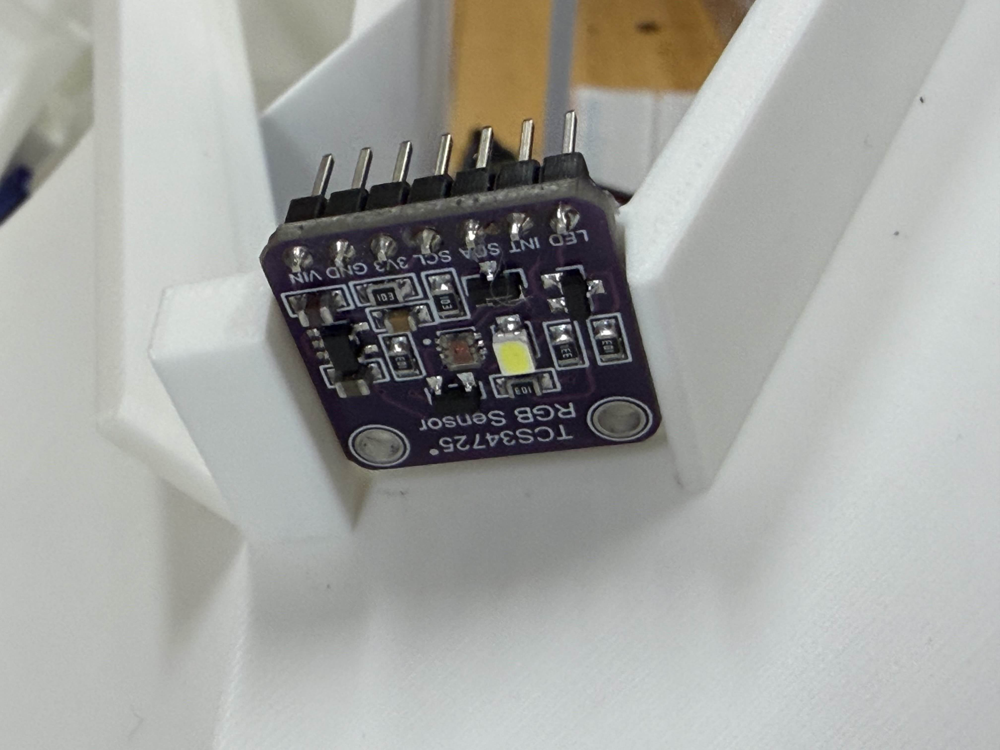
The color sensor needed to detect the four chip colors (Red, Green, Yellow, Blue) and pedestal colors (red, green, and white) with documented RGB values and accuracy metrics. The first thing we thought to do was use the raw values but the numbers fluctuated to much so we pivoted to ratios and that fixed all of our issues
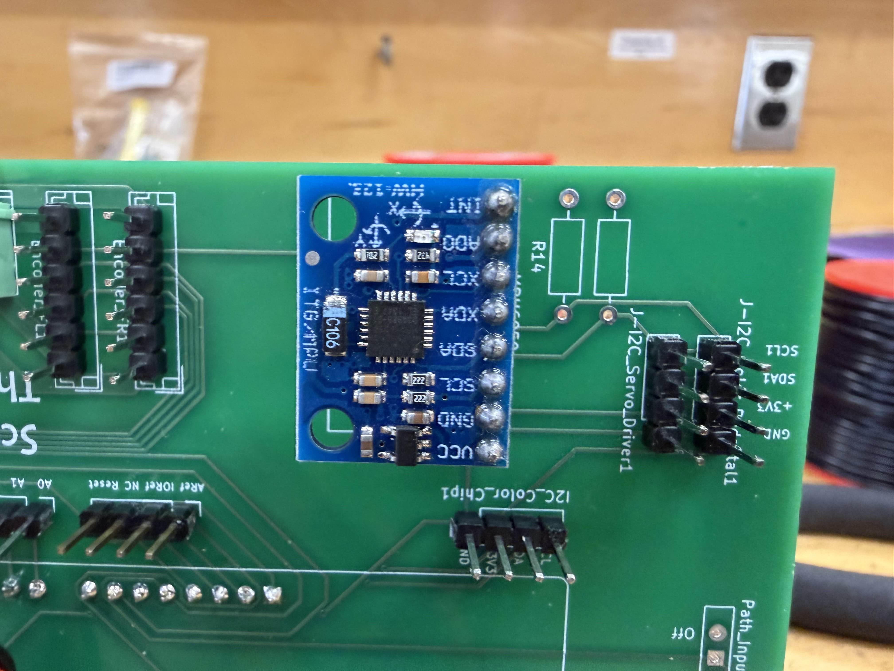
The Gyroscope is used to gather the orientation of the robot and helps with making sure our heading is what we expect. Drift was a major issue to fix this we use some of the Accelerometer data to help with that.
System Overview
The sensing subsystem uses three primary sensors communicating via I2C protocol to the Arduino GIGA. The TCS34725 provides RGB color detection for chip identification with 90%+ accuracy. The VL6180 Time-of-Flight sensor detects walls within 1 inch precision. The MPU6050 6-axis gyroscope tracks orientation and acceleration for autonomous navigation. All sensors have been individually tested, calibrated, and integrated with the main control firmware.
Locomotion System
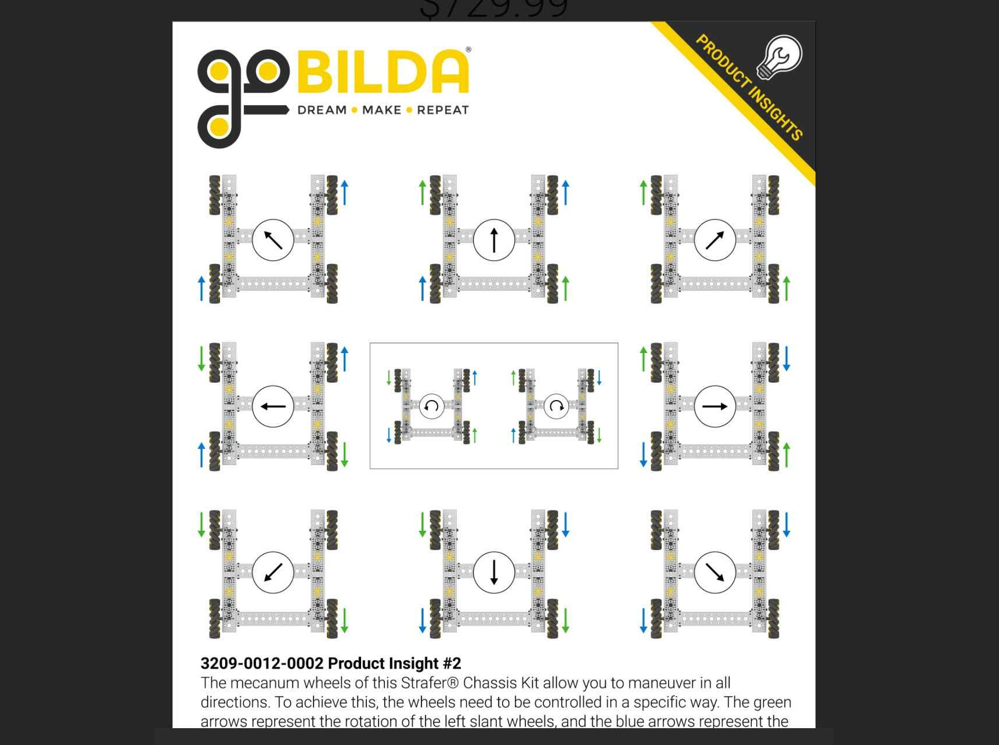
Four Mecanum wheels arranged for omnidirectional movement. Configuration allows tight-space maneuverability within 1 inch of walls while maintaining stability on flat surfaces.
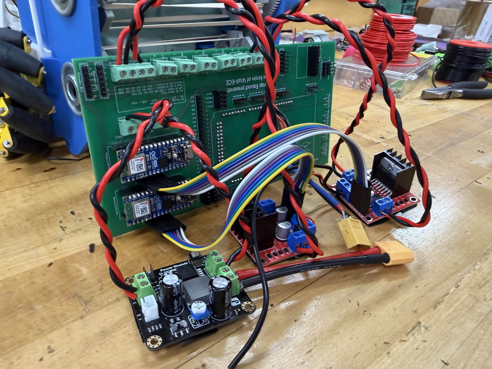
L298N dual H-bridge motor driver managing all four 110RPM DC motors with PWM speed control. Shows power distribution for reliable autonomous operation.
Documented testing of forward/backward, lateral, and diagonal movement capabilities. Includes timing data and accuracy measurements for competition board navigation.
Initial Architecture Inspiration
The foundation of Wall-ECE's locomotion system was built upon research and design principles from established robotic platforms. Below are the key YouTube videos that guided our initial architecture and design decisions:
Using Encoders on a single motor
This helped inform the team on how to use encoder values to adjust not only the speed but the distance that the motor can cover. It also showed you could have the distance get mapped out by an input function. She had a very good explanation of how they worked and how to use them.
Combining 4 motors and encoder for a locomotion system
This took the previous video's information about how to use encoders and applied it to 4 motors at once. This is where the idea for 2 smaller microcontrollers came from. I took this architecture, built it into our system, and added a way to keep the wheels in sync.
System Overview
The locomotion subsystem uses four encoders and for Mecanum wheels powered by 110RPM DC motors controlled via L298N dual H-bridge drivers. PWM signals enable smooth speed control and precise movement in all directions. The system was extensively tested for accuracy in wall-following operations and competitive board navigation. All movement algorithms optimize for quick response times while maintaining stability with the robot's compact weight distribution.
Chip Handling System
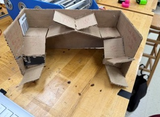
This the initial idea for the chip handling subsystem. It would have required 7 servos and 3 color sensors and would have been very heavy reasource wise.
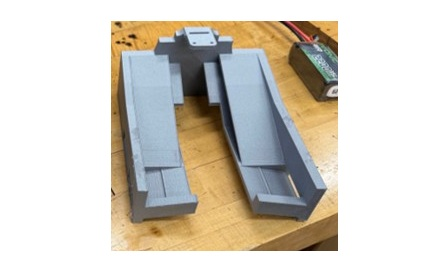
This is the design we had at the end of Design 1 for demo. This iteration of the system took the very reasource heavy and reduced it to almsot nothing with just one servo and one color sensor.
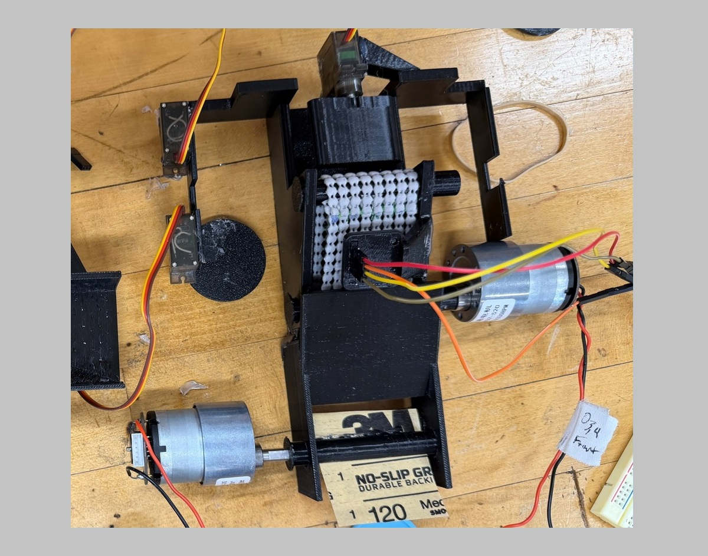
At the beginning of Design 2 we moved to placing it underneath the robot. This proved difficult because of the limited size under the frame.
System Overview
The chip handling subsystem uses MG90S servos controlled via PCA9685 servo driver to rotate and sort colored chips, and also used a DC-DC converter to step the voltage to 5V. The system started with it sitting on the frame but got it moved to the bottom after the difficulty of get the chips to the top, so in design 2 we moved the system under the frame this proved difficult due to size but achieved the 90% accuracy wanted.
Duck Wrangling System
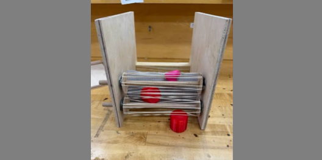
The first prototype at the end of Design 1 for the demo at the end of the class. This model also has jamming issue that the would be solved in Design 2.
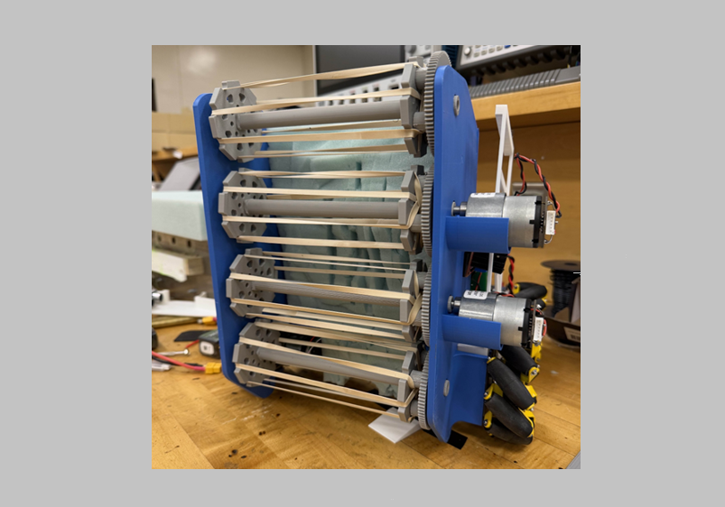
This is the final design that was used in the competition and is design to hold itself in place. This design eliminates the jamming issue so that the system could be used completely autonomously.
System Overview
The duck wrangling subsystem uses a Modius 12V continuous-rotation motor with 330 RPM torque output to capture and transport rubber ducks. The gripper features nonslip foam liner for improved grip and rubber bands for secure object retention. The system was designed to minimize damage to objects while ensuring reliable capture in rapid-fire collection scenarios.
Pedestal Stacking System
Complete stacking platform showing servo-controlled gates, color sensor placement, and pedestal positioning guides. Demonstrates space-efficient design within 12-inch constraint.
Testing results showing placement accuracy and timing data for stacking pedestals in correct order with minimal positional error.
Sensor calibration data showing TCS34725 color identification results for determining pedestal colors during the stacking operation.
System Overview
The pedestal stacking subsystem combines color sensing with precise servo control to identify and place colored pedestals in correct stacking order and move ducks to a bucket on board. MG90S servos control gate mechanisms that direct pedestals to appropriate stack positions. The TCS34725 color sensor identifies each pedestal's color in real-time. The entire system was optimized for minimal space usage and high-speed operation within the competition time constraints.